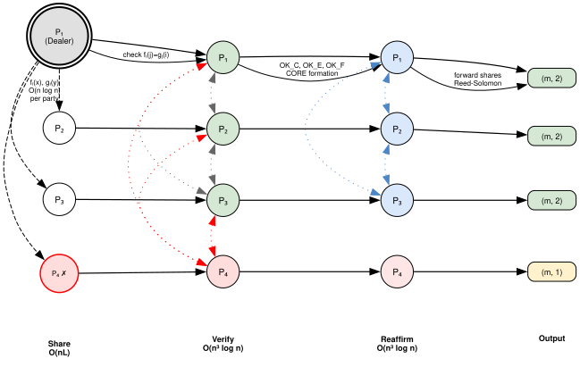
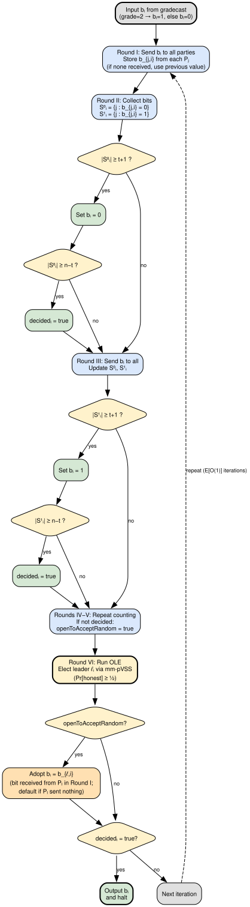
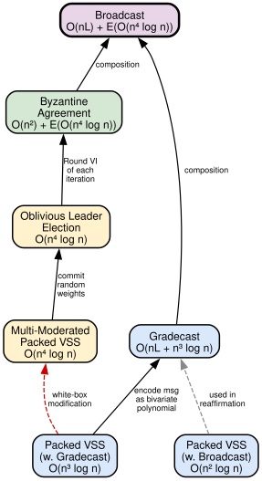

Asymptotically Free Broadcast in Constant Expected Time via Packed VSS
Paper: [1]
Model
- Synchronous network
- Private channels
- Perfect security (information-theoretic, no cryptographic assumptions)
- Optimal resilience: \(t < n/3\)
- Static adversary
Summary
Improves communication complexity of perfectly secure Byzantine broadcast in expected constant rounds. The protocol is balanced and asymptotically free for large messages.
| Communication | Rounds | |
|---|---|---|
| Katz-Koo '06 | \(O(n^2 L + n^6 \log n)\) | Expected constant |
| This paper | \(O(nL + n^4 \log n)\) | Expected constant |
Asymptotically free when \(L = \Omega(n^3 \log n)\). Also supports parallel broadcast (all \(n\) parties broadcast simultaneously), optimal for \(L = \Omega(n^2 \log n)\).
Definitions
Synchronous Network
Parties \(\mathcal{P} = \{P_1, \ldots, P_n\}\) connected via pairwise private and authenticated point-to-point channels, and (for some sub-protocols) a broadcast channel.
Perfect Security (Definition 3.1)
Protocol \(\pi\) is $t$-secure for functionality \(f\) if for every adversary \(\mathcal{A}\) in the real world, there exists a simulator \(\mathcal{SIM}\) in the ideal world such that for every \(\mathcal{C} \subset \mathcal{P}\) with \(|\mathcal{C}| \leq t\):
\[\{\text{Ideal}^f_{\mathcal{SIM}(z), \mathcal{C}}(\vec{x})\} \equiv \{\text{Real}^\pi_{\mathcal{A}(z), \mathcal{C}}(\vec{x})\}\]
where \(\vec{x}\) is chosen from \((\{0,1\}^*)^n\) with \(|x_1| = \ldots = |x_n|\). The equivalence is perfect (identical distributions, not statistical or computational).
Byzantine Agreement (\(\mathcal{F}_{\text{BA}}\), Functionality 8.1)
\(\mathcal{F}_{\text{BA}}\) — Byzantine Agreement
The functionality is parameterized by the set of corrupted parties \(I\).
- Receive from each honest party \(P_j\) its input \(b_j \in \{0, 1\}\). Send \((b_j)_{j \notin I}\) to the adversary.
- The adversary sends a bit \(\hat{b}\).
- If there exists a bit \(b\) such that \(b_j = b\) for every \(j \notin I\), then set \(y = b\). Otherwise, set \(y = \hat{b}\).
- Send \(y\) to all parties.
Properties:
- (Agreement) all honest parties output the same value
- (Validity) if all honest parties begin with the same input value \(v\), then all the honest parties output \(v\).
Gradecast (\(\mathcal{F}_{\text{Gradecast}}\), Functionality 5.1)
A dealer has an input and each party outputs a value and a grade \(\in \{0, 1, 2\}\).
Properties:
- (Validity) If the dealer is honest then all honest parties output the dealer's input and grade 2.
- (Non-equivocation) If two honest parties each output a grade \(\geq 1\) then they output the same value.
- (Agreement) If an honest party outputs grade 2 then all honest parties output the same output and with grade \(\geq 1\).
\(\mathcal{F}_{\text{Gradecast}}\)
The functionality is parameterized by the set of corrupted parties, \(I \subseteq \{1, \ldots, n\}\).
- If the dealer is honest: the dealer sends \(m\) to the functionality, and all parties receive \((m, 2)\) as output.
- If the dealer is corrupted then it sends some message \(M\) to the functionality.
- If \(M = (\mathsf{ExistsGrade2}, m, (g_j)_{j \notin I})\) for some \(m \in \{0,1\}^*\) and each \(g_j \in \{1, 2\}\), then verify that each \(g_j \geq 1\) and that at least one honest party receives grade 2. Send \((m, g_j)\) to each party \(P_j\).
- If \(M = (\mathsf{NoGrade2}, (m_j, g_j)_{j \notin I})\) where each \(m_j \in \{0,1\}^*\) and \(g_j \in \{0, 1\}\), then verify that for every \(j, k \notin I\) with \(g_j = g_k = 1\) it holds that \(m_j = m_k\). Send \((m_j, g_j)\) to each party \(P_j\).
Broadcast (\(\mathcal{F}_{\text{BC}}\), Functionality 8.5)
A distinguished dealer \(P^* \in \mathcal{P}\) holds an initial input \(M\).
Properties:
- (Agreement) All honest parties output the same value.
- (Validity) If the dealer is honest, then all honest parties output \(M\).
\(\mathcal{F}_{\text{BC}}\)
The functionality is parametrized with a parameter \(L\).
- The dealer (sender) \(P^*\) sends the functionality its message \(M \in \{0, 1\}^L\).
- The functionality sends to all parties the message \(M\).
Asymptotically free broadcast: a balanced broadcast protocol running in expected constant rounds with expected communication \(O(nL)\). Achieved when \(L = \Omega(n^3 \log n)\).
Verifiable Secret Sharing (\(\mathcal{F}_{\text{VSS}}\), Functionality 4.1)
The dealer holds a $(2t, t)$-bivariate polynomial \(S(x,y)\). The functionality:
- Receives \(S(x,y)\) from the dealer.
- If \(S(x,y)\) is of degree at most \(2t\) in \(x\) and at most \(t\) in \(y\), sends each party \(P_i\) the univariate polynomials \(f_i(x) = S(x, i)\) and \(g_i(y) = S(i, y)\). Otherwise, sends \(\bot\) to all parties.
Properties:
- (Privacy) no set of \(t\) shares reveals information about the secret
- (Binding) reconstruction always succeeds, i.e., the honest parties' shares uniquely determine \(S(x,y)\) regardless of the dealer's behavior.
Packed VSS (Protocol 4.2)
Generates Shamir sharing of \(t+1\) secrets \(s_{-t}, \ldots, s_0\) at the cost of \(O(n^2 \log n)\) bits P2P and broadcast. The dealer holds a $(2t, t)$-bivariate polynomial \(S(x,y)\) with \(S(l, 0) = s_l\) for \(l \in \{-t, \ldots, 0\}\).
- (Sharing) Dealer sends \((f_i(x), g_i(y))\) to \(P_i\) where \(f_i(x) = S(x, i)\), \(g_i(y) = S(i, y)\).
- (Pairwise Consistency Checks) Each \(P_i\) sends \((f_i(j), g_i(j))\) to every \(P_j\). If \(f_{ji} \neq g_i(j)\) or \(g_{ji} \neq f_i(j)\), \(P_i\) broadcasts \(\mathsf{complaint}(i, j, f_i(j), g_i(j))\).
- (Conflict Resolution) Dealer broadcasts \(g^D_i(y) = S(i, y)\) for each complaint. Parties in \(\mathsf{pubR}\) set \(\mathsf{happy}_i = 0\).
- (Identifying the CORE Set) \(\mathsf{CORE}\) = parties who broadcast OK. If \(|\mathsf{CORE}| < 2t + 1\), discard the dealer.
- (Revealing f-polynomials for non-CORE parties) Dealer broadcasts \(f^D_k(x) = S(x, k)\) for each \(P_k \notin \mathsf{CORE}\).
- (Opening g-polynomials for complaining parties) Dealer broadcasts \(g^D_j(y) = S(j, y)\) for complaining parties. If at least \(2t + 1\) parties do not broadcast OK, discard dealer.
- (Output) If dealer discarded, output \(\bot\). Otherwise output \((f_i(x), g_i(y))\).
Each degree-\(t\) univariate \(g_l(y)\) for \(l \in \{-t, \ldots, 0\}\) is a standard Shamir sharing of \(s_l\), and \(P_i\) locally computes its share as \(g_l(i) = f_i(l)\). Communication: \(O(n^2 \log n)\) P2P + \(O(n^2 \log n)\) broadcast, in \(O(1)\) rounds (Lemma 4.5).
Multi-Moderated Packed VSS (\(\mathcal{F}_{\text{mm-pVSS}}\), Functionality 6.1)
A packed VSS moderated by a set \(\mathcal{M}\) of \(t+1\) distinguished parties. Each party \(P_k\) outputs a flag \(v^k_M \in \{0,1\}\) and a decision \(\mathsf{d}^k_M \in \{\mathsf{accept}, \mathsf{reject}\}\) for each moderator \(M \in \mathcal{M}\).
\(\mathcal{F}_{\text{mm-pVSS}}\)
The functionality is parameterized by the set of corrupted parties \(I \subseteq \{1, \ldots, n\}\), a set \(\mathcal{M}\) of \(t+1\) distinguished parties called moderators.
- The dealer sends polynomials \(f_j(x), g_j(y)\) for every \(j\). If the dealer is honest, there exists a single $(2t, t)$-polynomial \(S(x,y)\) such that \(f_j(x) = S(x, j)\) and \(g_j(y) = S(j, y)\) for every \(j \in \{1, \ldots, n\}\).
- If the dealer is honest, send \(f_i(x), g_i(y)\) for every \(P_i \in I\) to the adversary.
- For each moderator \(M_j \in \mathcal{M}\):
- If \(M_j\) is honest, set \(v^k_{M_j} = 1\) for every \(k\). If dealer is honest, set \(\mathsf{d}^k_{M_j} = \mathsf{accept}\) for every \(k\). If dealer is corrupt, receive \(m_j\) from adversary; if \(m_j = \mathsf{accept}\) and shares define a unique $(2t,t)$-polynomial, set \(\mathsf{d}^k_{M_j} = \mathsf{accept}\); otherwise set \(\mathsf{d}^k_{M_j} = \mathsf{reject}\) for every \(k\).
- If \(M_j\) is corrupt, receive \(m_j\) from adversary. If \(m_j = (\mathsf{Agreement}, (v^k_{M_j})_{k \notin I}), \mathsf{d}_{M_j})\) and for some honest \(k\) it holds that \(v^k_{M_j} = 1\), verify that \(S(x,y)\) is a $(2t,t)$-polynomial and set \(\mathsf{d}^k_{M_j} = \mathsf{d}_{M_j}\) for every \(k \notin I\). If \(m_j = (\mathsf{NoAgreement}, (\mathsf{d}^k_{M_j})_{k \notin I})\), set \(v^k_{M_j} = 0\) for every \(k\).
- (Output) Each honest \(P_k\) (\(k \notin I\)) receives \(f_i(x), g_i(y)\), \((\mathsf{d}^k_M)_{M \in \mathcal{M}}\), and flags \((v^k_M)_{M \in \mathcal{M}}\).
Communication: \(O(n^4 \log n)\) bits P2P.
Oblivious Leader Election (\(\mathcal{F}_{\text{OLE}}\), Functionality 7.1)
\(\mathcal{F}_{\text{OLE}}\)
The functionality is parameterized by the set of corrupted parties \(I \subset \{1, \ldots, n\}\) and a family \(\mathcal{D}\) of efficiently samplable distributions \(D : \{0,1\}^{\text{poly}(n)} \to \{1, \ldots, n\}^n\).
- Receive from the adversary a sampler \(D\) and verify that \(D \in \mathcal{D}\). If not, take a default sampler.
- Choose a random \(r \leftarrow \{0,1\}^{\text{poly}(n)}\) and sample \((\ell_1, \ldots, \ell_n) = D(r)\).
- Hand \(r\) to the adversary and hand \(\ell_i\) to every party \(P_i\).
With fairness \(\delta \geq 1/2\): there exists \(\ell \in \{1, \ldots, n\}\) such that (a) each honest party \(P_i\) outputs \(\ell_i = \ell\), and (b) \(P_\ell\) is an honest party.
Protocol (\(\Pi_{\text{OLE}}\), Protocol 7.2):
- (Choose and commit weights) Each \(P_i\) chooses random \(c_{i \to j} \in \{1, \ldots, n^4\}\) for every \(j\), hiding \(t+1\) values per $(2t,t)$-bivariate polynomial. Parties invoke \(\mathcal{F}_{\text{mm-pVSS}}\) in \(T = \lceil n/(t+1) \rceil\) parallel instances. Each \(P_k\) records \(\mathsf{succeeded}_i := \{j \mid v^i_{d,j} = 1 \text{ for all } P_d \in \mathcal{P}\}\).
- (Reconstruct and pick a leader) Run reconstruction (\(\Pi^{\text{Rec}}_{\text{mm-pVSS}}\)) in parallel. Each \(P_k\) computes \(c^k_j = \sum_{i=1}^{n} c^k_{i \to j} \bmod n^4\) and outputs the \(j\) minimizing \(c^k_j\) among \(j \in \mathsf{succeeded}_k\).
Communication: \(O(n^4 \log n)\) bits P2P (Theorem 7.3).
Protocol Overview
Broadcast decomposes into two sub-protocols: gradecast followed by Byzantine agreement.
Gradecast construction
The naive approach to gradecast has the dealer send \(M\) to all \(n\) parties, and each party forwards it to all others for verification — costing \(O(n^2 L)\) bits. The key idea of this paper is to avoid sending the full message at each step by encoding it as a polynomial and distributing shares instead.
Step 1: Encode and share — \(O(nL)\) bits. The dealer encodes its $L$-bit message into a $(t, t)$-bivariate polynomial \(S(x,y)\) over \(\mathbb{F}\) holding \((t+1)^2 \approx n^2\) field elements. Each party \(P_i\) receives only two univariate polynomials: \(f_i(x) = S(x, i)\) and \(g_i(y) = S(i, y)\), each of degree \(t\) — so \(O(n \log n)\) bits per party. Sending to all \(n\) parties costs \(O(n^2 \log n)\) per gradecast instance. For an $L$-bit message, the dealer runs \(\ell = \lceil L / n^2 \log n \rceil\) parallel instances, so the total sharing cost is \(\ell \cdot O(n^2 \log n) = O(nL)\) bits.
Step 2: Verify — \(O(n^3 \log n)\) bits. Each pair \((P_i, P_j)\) exchanges point evaluations \(f_i(j), g_i(j)\) and checks \(f_i(j) = g_j(i)\). Each exchange is \(O(\log n)\) bits, over \(O(n^2)\) pairs, costing \(O(n^2 \log n)\) per instance and \(O(n^3 \log n)\) across all instances. Inconsistencies produce complaints; the dealer resolves them by revealing polynomials. The STAR algorithm finds a CORE of \(\geq 2t+1\) consistent parties.
Step 3: Reaffirm and reconstruct — \(O(n^3 \log n)\) bits. Three reaffirmation rounds (OK\(_C\), OK\(_E\), OK\(_F\)) propagate agreement about the CORE. Then data dissemination: the \(t+1\) honest parties forward their shares, giving every party \(\geq 2t+1\) points on \(S(x,y)\), sufficient for Reed-Solomon error correction. Each party reconstructs \(S(x,y)\) via robust interpolation.
Grade assignment. After reconstruction, each \(P_i\) assigns its grade based on how much confirmation it received:
- Grade 2: \(P_i\) sent OK\(_F\) in Round 7, and received \(\geq 2t+1\) OK\(_F\) messages from parties in \(F_i\) that hold the same polynomials \((f'_i(x), g'_i(y))\). This means \(P_i\) has strong evidence that all honest parties agree on the same polynomial \(S'(x,y)\).
- Grade 1: \(P_i\) successfully reconstructed a unique \(S'(x,y)\) from \(\geq 2t+1\) shares, but did not receive enough OK\(_F\) confirmations to be certain of global agreement.
- Grade 0: \(P_i\) received fewer than \(2t+1\) valid shares, or robust interpolation did not yield a unique polynomial. Output \(\bot\).
If the dealer is honest, all honest parties receive consistent shares, pass all reaffirmation rounds, and output grade 2. If the dealer is corrupt but some honest party outputs grade 2, the non-equivocation and agreement properties of gradecast guarantee all honest parties output the same value with grade \(\geq 1\).
Total: \(O(nL)\) for sharing + \(O(n^3 \log n)\) for verification and reaffirmation \(= O(nL + n^3 \log n)\).

Byzantine agreement and OLE
After gradecast, each party converts its grade to a BA input: grade 2 maps to 1, grade \(< 2\) maps to 0. The BA protocol (Protocol 8.2) runs iteratively in 6-round iterations:
- Rounds I–III: Each party broadcasts its current bit \(b_i\). Parties count how many sent 0 vs 1. If \(\geq t+1\) parties sent a value \(v\), adopt \(b_i = v\). If \(\geq n - t\) parties agree, set \(\mathsf{decided} = \mathsf{true}\).
- Rounds IV–V: If not yet decided, set \(\mathsf{openToAcceptRandom} = \mathsf{true}\) (willing to accept the leader's bit). Repeat counting.
- Round VI (OLE): All parties run oblivious leader election. Each \(P_i\) chooses random values \(c_{i \to j} \in \{1, \ldots, n^4\}\) for every \(j\), committed via multi-moderated packed VSS. After reconstruction, parties compute \(c_j = \sum_i c_{i \to j} \bmod n^4\) and elect the \(j\) minimizing \(c_j\) as leader. With probability \(\geq 1/2\), the leader \(P_\ell\) is honest. If \(\mathsf{openToAcceptRandom}\), adopt \(b_{\ell}\). If \(\mathsf{decided}\), output \(b_i\) and halt. Otherwise, next iteration.
When an honest leader is elected, all honest parties adopt the same bit and will agree in the next iteration, so BA terminates in expected \(O(1)\) iterations. Each iteration costs \(O(n^2)\) bits for bit exchange plus \(O(n^4 \log n)\) for OLE.

Broadcast output
If BA outputs \(y = 1\), each party outputs the gradecast message \(m\). If \(y = 0\), output \(\bot\).
